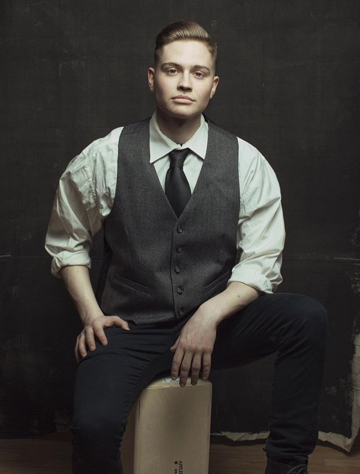
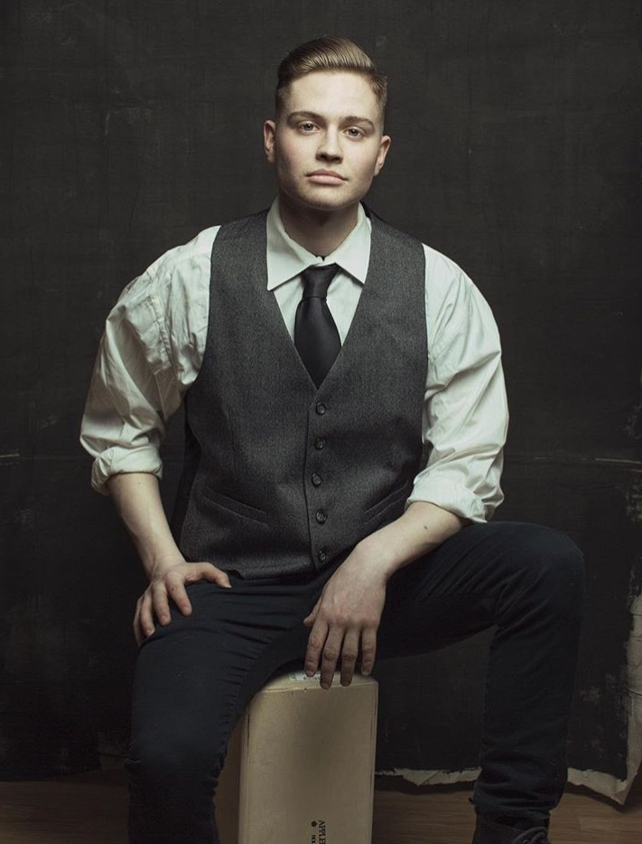

The combination of handcrafted quality, hard work and esthetic are the standard here. We have stood the test of time and stayed true to our roots. We continue to forge on in a day and age where everything is over processed, and underwhelming. We take our time, we love what we do, and this is our passion.

Lucky's Concord
50 South State St. Concord, NH 03301603-715-5470
Lucky's Barbershop and Shave Parlor was born out of a necessity for both Barbers and customers alike. At the time of its inception there was a big and hollow deficit of places to receive exceptional quality haircuts, conversation, and classic aesthetic, but also a lack of places for Barbers to perform these services. With the care, concern and fundamentals passed on from the highly skilled Barbers that came before us, we proudly carry the torch for generations to come. With open arms we welcome and embrace all walks of life, from men, women and children. We perform all haircuts,styles, beard trims and shaves to fit the grooming needs from classic to modern and everything in between. Service and quality is our mission.

Lucky's Portsmouth
801 Islington St #28, Portsmouth, NH 03801603-715-5470
2017 is a big year in a lot of ways for people. It's a true sign of the times and a change in the every day world that we live in. For many years people have traveled extensively throughout the great state of New Hampshire and beyond to the capital city of Concord to get their haircut at Luckys Barbershop and Shave Parlor. We understand the challenges of distance and time just as much as the next. We decided that this was the time to bring our specialty skill set and trade to Portsmouth New Hampshire. In an ever-growing city that exemplifies community, hard work, creativity, and small business growth,we felt that it would be as good a time as any to spread our wings and bring Lucky's to the coast. We couldn't be happier shortening the commute for a lot of our long-term customers and bridging the gap where this area has felt a void for a long time for new customers alike. We are happy and pleased to be located within the Papa Wolf Supply Company headquarters on Islington Street. We feel like it's a great combination of handmade craftsmanship housed under one roof. We look forward to what the new year brings upon us hope to see you soon!
Lucky's Portsmouth is appointment only. Schedule an AppointmentBarbers

 


Schedule
Concord
Lucky's Concord is currently first-come first-serve walkin service.| Monday | 7am - 5pm |
| Tuesday | 7am - 5pm |
| Wednesday | 7am - 5pm |
| Thursday | 7am - 7pm |
| Friday | 7am - 5pm |
| Saturday | 7am - 12pm |
| Sunday | 9am - 2pm |